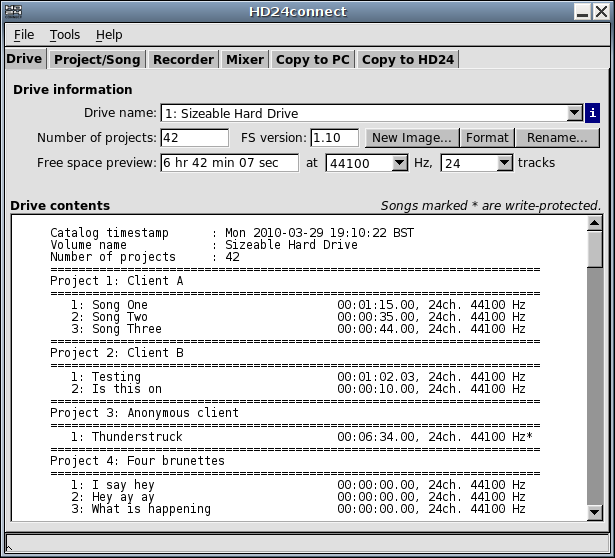

This chapter deals with normal operation of HD24connect. This means that in these chapters, it is assumed that you start up HD24connect with a normal, valid HD24 ADAT FST drive already connected to your system.
The following is an example of what the main screen of HD24connect may look like just after starting up, when a valid drive was found. The image may differ slightly depending on the platform and operating system that you are running.

If no drive was found, an error message will be displayed. If you run Windows Vista or higher, you may need to Run as Administrator for the drive detection to work. Under Linux, you will need read permissions for the drive device you want to access.
If multiple HD24 drives were detected, you can switch between drives using the dropdown box next to 'Drive name'. The remaining boxes contain information about the drive contents. The amount of free space is indicated in hours, minutes and seconds, but depends on the sample rate and number of tracks that you are recording. To see how much recording time is left for a given sample rate and number of tracks, select those settings in the dropdown boxes next to the free space preview box. In recent versions of HD24connect, drive images in the last used drive image directory will also be presented in the Drive name dropdown box.
Clicking on the i next to the drive name dropdown box will show additional information about the currently selected drive or drive image. At the moment this additional information is limited to the device path (the name of the file or drive currently in use).
It is possible to create drive image files on your computer. Such files will act just like HD24 drives; they will be able to contain 99 projects with up to 99 songs each, and can contain audio information as well as information about locate points, track slip information (not currently in use), etc. One current use for such image files is to permit storing HD24 projects on removable media such as DVD. The image files can be burned to DVD as raw image or iso image. Such DVDs can be used by HD24connect as if they were regular HD24 drives.
Something to keep in mind is that such files can get very large; they will easily surpass 4 gigabyte. As such, the drive on which you are creating these files needs to support files larger than 4 gigabyte. For modern file systems this is not usually a problem; however, devices such as thumb drives are often formatted with the somewhat obsolete FAT file system, which has a 4 gigabyte limit on file size.
The Format button allows you to perform a quickformat on the currently selected drive. This will initialize the drive or drive image for use with an HD24 recorder and will destroy all information on the drive. The Drive name dropdown only shows valid HD24 drives. If you wish to format a drive that has either never been formatted before or used for non-HD24 purposes, you will need to select the drive in question with menu option File->Recovery->Select device... You can then select any drive on your system for formatting. HD24connect will notice the drive is not a HD24 drive and ask you "Do you want to use the drive anyway?" Answer yes. Subsequently, it will ask you if you want to load a header file; answer NO. After this, you will be able to format the drive in question.
IMPORTANT WARNING!! Although HD24connect asks you to confirm formatting drives, you should make sure that you have selected the correct drive before actually proceeding with formatting the drive. If you select the system drive of your computer for formatting as HD24 drive, tell HD24connect to format it and confirm that you do indeed wish to do this, HD24connect will obediently wipe out your system drive, rendering your computer unbootable! When in any doubt, format any drives in your HD24 recorder instead.
The Rename... button on the Drive Info tab will allow you to change the drive name (also called volume label) of the active drive from the default Drive Name to something more interesting. The maximum length for the volume label of the drive is 64 characters.
The main screen will show the drive contents as well. As indicated on screen, songs marked with an asterisk are write protected. Using the File menu of HD24connect, you will be able to export the catalog to file or to print it. For printing convenience, the catalog is already indented a few spaces to give a few characters margin on paper. Only the first 32 characters of the file name are visible; this may change in a future release of the software.
If desired, this catalog can be exported to file or to printer with the following two menu choices:
File -> Export catalog...
This choice allows us to write the catalog of the current disk to file, permitting you to preview the contents of the catalog or to add layout in your favorite word processor.
File -> Print catalog...
This choice will send the catalog directly to the default printer.
If (for whatever strange reason) the print or export functionality does not work, a workaround is to simply copy/paste the catalog from screen.